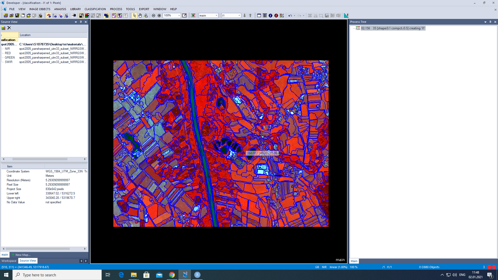
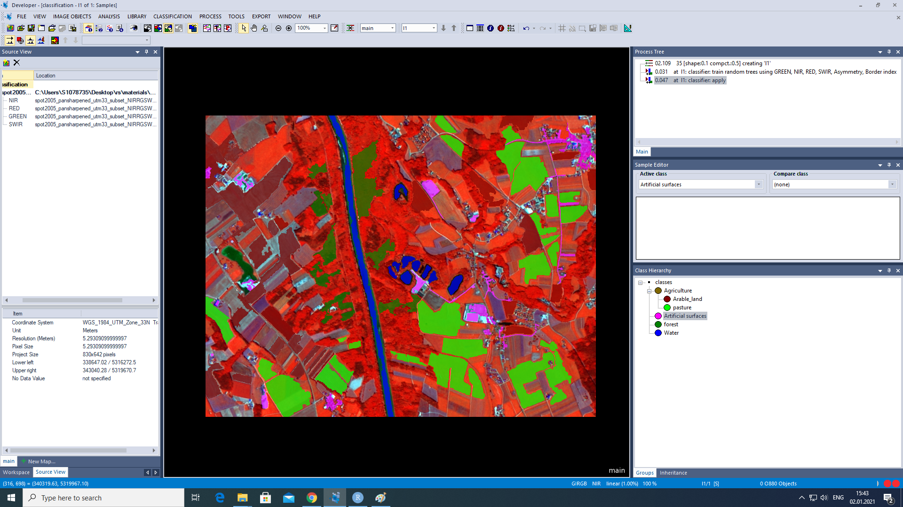
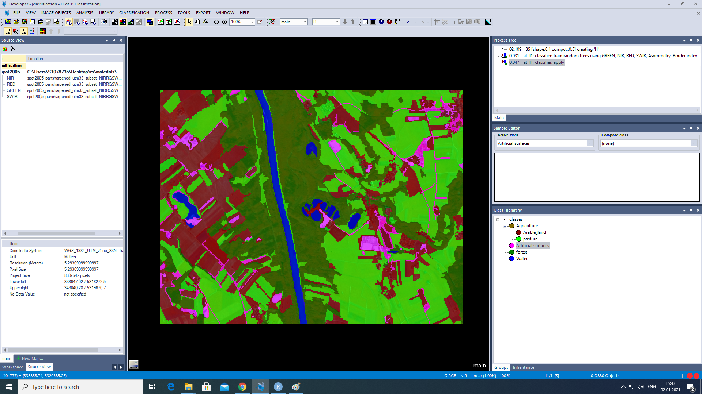

Radar remote sensing assignment
Date: 04 Jänner, 2021
1 Part I - Classifiers
Download my ECognition project here.
In this first part we will train a model of random trees, the steps are as follows:
- Generation of homogeneous areas in the image (super-pixels).

- Creation of samples for each target class.

- Train the classifier (training).
- Apply the classifier in every super-pixels of the image (prediction).
